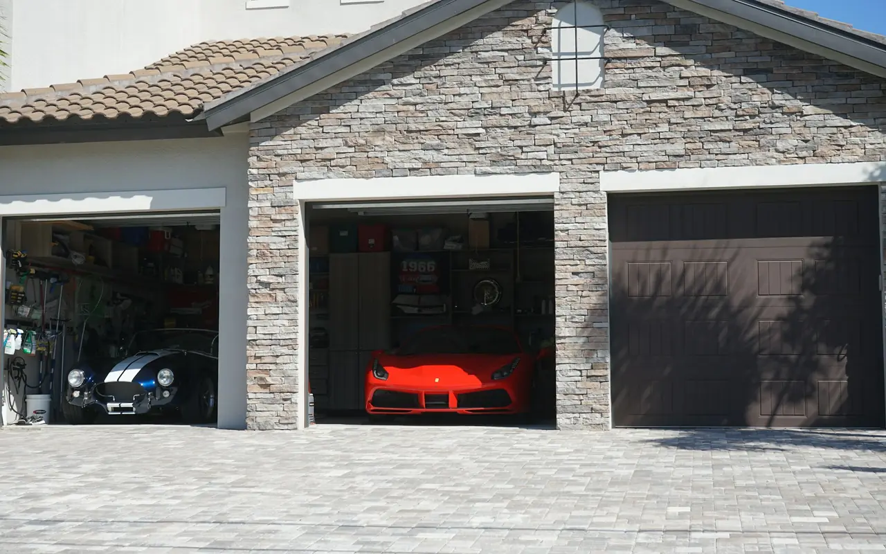

LiftMaster · Genie · Belt · Chain · Wall-Mount · Smart
Garage Door Openers Five Towns, NY
Whether your existing opener failed or you're upgrading to a quieter, smarter system, Five Towns Garage Door installs and repairs all major opener brands throughout Cedarhurst, Hewlett, Lawrence, Woodmere, and Inwood. Same-day repair. Free written estimate on new installations. We install and service LiftMaster and Genie openers.
- Same-Day Opener Repair
- Free Estimate on New Installs
- Battery Backup Options
Opener Service — Five Towns
Opener Repair & Installation Throughout the Five Towns
The garage door opener is the mechanical heart of the system. When it fails — and they all fail eventually — the impact is immediate. Cars trapped inside. Kids can't get in after school. The commute is disrupted. We handle opener problems throughout the Five Towns the same day you call.
The most common opener failure we see in Five Towns homes is a stripped main drive gear — the nylon gear inside the opener head that transfers power from the motor to the drive mechanism. When it strips, the motor runs but the door doesn't move. We stock replacement gear kits for every major brand on every truck. In most cases, the repair takes under an hour and the opener is back in service the same day.
Repair or replace?
For homes where the opener is more than 15 years old, has failed multiple times, or lacks current safety features like photo-eye sensors and auto-reverse — we recommend replacement rather than repair. A new LiftMaster or Genie with battery backup, LED lighting, and smartphone control costs less than most people expect and provides years of reliable, quiet service. If only the gear has failed on an otherwise sound opener, a same-day opener repair is usually the better value; for a new system, see garage door and opener installation.
South Shore Storm Outages
The Five Towns South Shore communities — Lawrence, Inwood, and Cedarhurst — experience frequent power outages during nor'easters and summer Atlantic storms. Battery backup on an opener is not a luxury on the South Shore — it's a practical necessity. We include it as a recommendation on every installation in the Five Towns.
Motor Hums, Door Won't Move?
Stop pressing the button — running the motor against a stuck door can cause more damage. If the door itself looks crooked or a spring is visibly broken, keep clear of it. Call (516) 490-0931 and we'll diagnose it the same day.
Opener Repairs
Opener Repairs We Handle Same Day
Most opener failures don't require a new opener. These are the repairs we perform most often across the Five Towns, with starting prices.
Gear & Sprocket Replacement
Motor runs, door doesn't move — almost always the main drive gear. We stock kits for LiftMaster, Genie, Chamberlain, and Craftsman. Replaced same day throughout the Five Towns. No need to replace the entire opener when only the gear has failed.
Safety Sensor Repair & Alignment
Door reverses before closing or won't close at all — sensor misalignment or sensor failure. Photo-eye sensors are legally required on all openers since 1993. We realign, replace, and test sensors throughout the Five Towns same day.
Remote & Keypad Programming
Lost a remote, added a car to the household, or keypad stopped working — we program remotes, keypads, and vehicle HomeLink systems for all major opener brands. Simple and fast same-day service throughout the Five Towns.
Battery Backup Installation
Add battery backup to an existing LiftMaster opener or upgrade to a new opener with integrated backup. Essential for Five Towns South Shore properties where storm outages are common. Door operates normally during outages — no manual release needed.
Logic Board Replacement
Opener powers on but doesn't respond to remotes or wall button — often a failed logic board or a power surge that corrupted the control board. We diagnose and replace logic boards on LiftMaster and Genie openers throughout the Five Towns.
Brand-Specific Service
Part numbers, models, and pricing for the two brands we install most: LiftMaster opener repair & installation and Genie opener repair & installation.
Opener Types We Install
Which Opener Is Right for Your Five Towns Home?
Opener selection depends on the garage ceiling height, the proximity of living spaces to the garage, whether you need battery backup, and how much smart-home integration you want. Here is what we install most often in the Five Towns — and why.
Belt Drive — LiftMaster 87504
The most installed opener in Five Towns attached garages. The steel-reinforced belt is dramatically quieter than a chain drive — there's no metal-on-metal contact, no rattle, and no grinding during operation. In homes where the garage is directly below a bedroom or adjacent to a living room — which describes the majority of attached garages in Hewlett, Woodmere, and Cedarhurst — the noise difference is immediately noticeable.
The 87504 includes integrated battery backup (the door continues to function normally during power outages), built-in LED lighting, and MyQ smart home connectivity straight out of the box. It's the opener we install most frequently in the Five Towns and the one we recommend without hesitation for attached garage applications.
- Drive Type
- Steel belt
- Battery Backup
- Integrated
- Smart Home
- MyQ
- Noise Level
- Very quiet
- Best for: attached garages, bedrooms above the garage, South Shore homes
Wall-Mount — LiftMaster 8500W
The wall-mount opener is the right answer for a specific problem that's common in older Five Towns homes — the garage ceiling is too low for a standard overhead rail opener, or the ceiling is finished and used for storage. The 8500W mounts on the wall directly beside the door, requires no overhead rail, and frees the entire ceiling for use.
Beyond the space advantage, the 8500W is the quietest opener available — there's no chain or belt moving overhead, just a direct-drive mechanism that turns the torsion spring shaft. It includes battery backup, a deadbolt lock, and MyQ. It's particularly popular in the Inwood and Lawrence homes with lower original ceiling heights, and in Woodmere renovations where homeowners have added ceiling storage or finished the garage ceiling.
- Drive Type
- Direct drive
- Battery Backup
- Integrated
- Ceiling Needed
- None
- Deadbolt
- Included
- Best for: low ceilings, finished ceilings, storage ceilings
Chain Drive — Genie & LiftMaster
Chain drive openers are the workhorses of the garage door industry — reliable, powerful, and straightforward. They're the most economical option and perform well in detached garages where noise isn't a concern. For attached garages where living spaces are adjacent or above, the chain rattle is audible inside the house and we recommend a belt drive instead.
For Five Towns detached garages — particularly the stand-alone garages common on larger Lawrence and Cedarhurst properties — a chain drive is a perfectly good, cost-effective choice. We install both LiftMaster and Genie chain drive models depending on the application and budget.
- Drive Type
- Metal chain
- Battery Backup
- Add-on option
- Noise Level
- Moderate
- Best Value
- Economy
- Best for: detached garages, budget installations, commercial use
Smart Opener Upgrade — MyQ
MyQ is LiftMaster's smart garage platform — it connects your opener to Wi-Fi and gives you control from your smartphone from anywhere in the world. Open or close the door remotely, receive alerts when it's been left open, set schedules, and integrate with smart home platforms including Amazon Alexa and Google Assistant.
For Five Towns families where teenagers drive independently, or where packages are being delivered while no one is home, MyQ provides real-time visibility and control. We can upgrade compatible existing LiftMaster openers with a MyQ hub, or include it as a built-in feature on all new LiftMaster belt drive and wall-mount installations. Genie owners get the same kind of control through Aladdin Connect.
- Platform
- MyQ / LiftMaster
- Remote Access
- Anywhere
- Alerts
- Open/close notify
- Smart Home
- Alexa / Google
- Best for: families with teens, remote monitoring, package delivery
Side by Side
Belt vs. Chain vs. Wall-Mount vs. Screw Drive
The short version: belt drive for attached garages with living space nearby, wall-mount for low or finished ceilings, chain drive for detached garages and tight budgets, and screw drive for speed in high-use garages.
| Opener Type | Example Model | Drive | Battery Backup | Noise | Best For |
|---|---|---|---|---|---|
| Belt drive | LiftMaster 87504 | Steel-reinforced belt | Integrated | Very quiet | Attached garages, bedrooms above |
| Wall-mount | LiftMaster 8500W | Direct drive on the torsion shaft | Integrated | Quietest | Low, finished, or storage ceilings |
| Chain drive | Genie & LiftMaster chain models | Metal chain | Add-on option | Moderate | Detached garages, budget installs |
| Screw drive | Genie MachForce 2 HPc | Rotating threaded steel rod | — | — | High-use detached garages, heavy doors |
Quiet DC belt drives, the 8500W and 98022 wall-mount openers, MyQ smart control, Security+ 2.0 logic boards, and integrated battery backup. Gear rebuilds, photo-eye realignment, and remote programming same day.
LiftMaster opener service & modelsMachForce screw drive and StealthDrive belt drive openers, ChainMax chain drives, wall-mount units, Aladdin Connect smart control, and Safe-T-Beam sensor diagnostics and repair.
Genie opener service & modelsModern Opener Features
What Today's Openers Offer That Older Models Don't
If your opener is more than 10 years old, it's missing features that are standard today — and that make a real difference in daily use and home security. Here is what you get with a current LiftMaster or Genie installation in a Five Towns home.
Battery Backup
The door continues to function normally during power outages — essential on the Five Towns South Shore where nor'easters and summer storms regularly cause outages. No emergency release fumbling in the dark.
Smartphone & Wi-Fi Control
Open, close, and monitor your garage door from anywhere. Real-time notifications if the door has been left open. Full control even when you're traveling — from a phone in your pocket.
LED Lighting
Bright, long-lasting LED fixtures built into the opener head replace incandescent bulbs that burned out constantly. Better illumination, no maintenance, and no interference with remotes like some aftermarket LED bulbs cause.
Quiet Operation
Current belt drive and direct drive openers are dramatically quieter than chain drive models from 10+ years ago. In attached garages where a bedroom sits above — common in Five Towns colonials — the difference in overnight noise is significant.
Rolling Code Security
Every button press generates a new security code — eliminating the vulnerability of older fixed-code openers that could be cloned with a code grabber. All current LiftMaster and Genie openers use rolling code technology.
Soft Start & Stop
Modern DC motors ramp up and slow down gradually at the end of travel — reducing stress on the door hardware, springs, and cables. This alone extends the service life of the entire door system compared to the abrupt start-stop of older AC motors.
Serving the Five Towns
Opener Service in Every Five Towns Community
Same-day opener repair and installation across the whole Five Towns service area. Choose your town for local pricing and common problems.
Opener Questions
What Five Towns Homeowners Ask About Openers
Direct answers from the technicians who install and repair openers every day throughout Cedarhurst, Hewlett, Lawrence, Woodmere, and Inwood.
What is the best garage door opener for a Five Towns home?
For most attached garages in the Five Towns, we recommend the LiftMaster belt drive series — our top pick is the 87504 with integrated battery backup, and the 84505 is another quiet belt drive option. Belt drive is significantly quieter than chain drive, which matters when the garage is directly below or adjacent to living spaces; the 87504 also includes battery backup for South Shore storm outages and built-in MyQ smart connectivity. For garages with low or finished ceilings — common in older Inwood and Cedarhurst homes — the LiftMaster 8500W wall-mount is the better choice. Call (516) 490-0931 and we'll give you a specific recommendation based on your garage.
My opener motor runs but the door doesn't move — what happened?
Almost certainly a stripped main drive gear. When you hear the motor but see no movement, the nylon gear that transfers power from the motor shaft to the drive mechanism has worn through. It's designed to fail before the motor does — protecting the more expensive component. We stock gear kits for LiftMaster, Genie, Chamberlain, and Craftsman openers on every truck and replace them same day throughout the Five Towns. Call (516) 490-0931.
Do I need battery backup on a Five Towns garage door opener?
For South Shore Five Towns properties — Lawrence, Inwood, Cedarhurst, and parts of Woodmere — we strongly recommend battery backup on every installation. Nor'easters, summer Atlantic storms, and the occasional hurricane-related outage are real and recurring events on the South Shore. A LiftMaster opener with integrated battery backup means the door functions normally during outages. You don't have to pull the emergency release to get the car out in the dark during a storm. Call (516) 490-0931.
Can you install a garage door opener without a ceiling rail?
Yes — LiftMaster wall-mount openers (the 8500 series) mount on the wall beside the door rather than on a rail above it, making them the ideal solution for garages with low or obstructed ceilings. They're also significantly quieter than overhead rail openers. They're common in older Five Towns homes with finished or storage ceilings. See the LiftMaster wall-mount models we install or call (516) 490-0931.
My garage door reverses right before it closes — how do I fix it?
The two most common causes are misaligned photo-eye safety sensors and an opener force setting calibrated too conservatively. The sensors sit at the bottom of the door opening — if one gets knocked out of alignment, the opener sees a blocked beam and reverses. We realign sensors and recalibrate force settings same day. Occasionally the issue is a door that's slightly out of balance or has a physical obstruction in the track — we diagnose the actual cause rather than just resetting the opener. Call (516) 490-0931.
Can I control my garage door from my phone in the Five Towns?
Yes — current LiftMaster openers with MyQ connectivity allow smartphone control from anywhere. You can open, close, and monitor the door remotely, receive notifications if it's been left open, and integrate with Amazon Alexa and Google Assistant. We can install a MyQ hub on compatible existing LiftMaster openers, or include it as a built-in feature on any new LiftMaster installation. Genie openers use Aladdin Connect for the same purpose. Call (516) 490-0931 for details.
Google Reviews
What Customers Say
4.7 out of 5 stars from 15 Google reviews (as of September 2026). Reviews are quoted as written.
My opener's lift chain completely derailed from the gear assembly, leaving our SUV totally trapped inside the bay. The tech arrived with all the correct replacement garage door parts right inside his work vehicle to fix the mechanism. He re-aligned the motor assembly and completed the entire garage door repair so we could finally get out of the house.
Having an issue with our external keypad/remote caused us to contact Five Towns Garage Doors. The company helped us contact the manufacturer for technical assistance instead of just charging us for a service call, saving us time and money. If we ever need garage door repair again, we will definitely use them.
Just purchased a new garage door & opener for our home from one of their many styles of garage door for sale. From the first phone call to the installation everything has been smooth and easy I love the way it turned out! The new door updated our garage and now we can open and close the door with our phone, which is helpful! The best place on Long Island for garage doors near me.
Opener Repair & Installation in the Five Towns — Today
Same-day opener repair throughout Cedarhurst, Hewlett, Lawrence, Woodmere, and Inwood. Free estimate on new installations. We install and service LiftMaster & Genie openers.